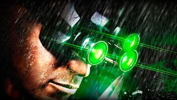

Bienvenido/a al sitio dedicado a Splinter Cell, una saga legendaria que combina espionaje táctico, misiones encubiertas y decisiones críticas. Esta página rinde homenaje a Sam Fisher y todo el universo que lo rodea.
"La oscuridad es tu mejor aliada."
